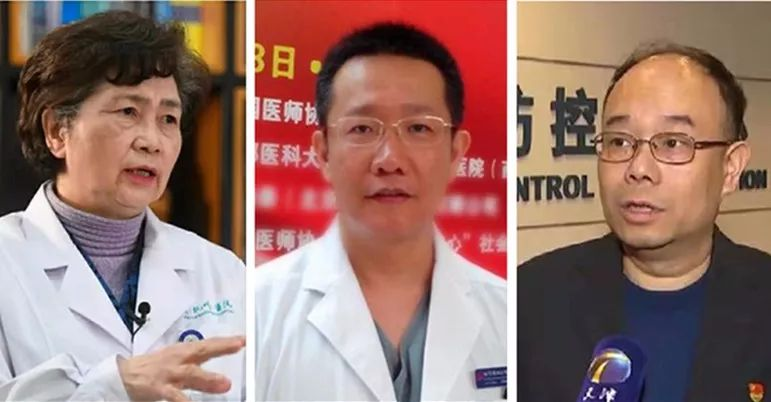

特别报道：1月6日之后，12天病例零新增之谜
原文链接 备份链接 审慎的通报流程、破格启用的检测手段，以及实验室级别的硬性规定，如何影响了整个过程的时效性？ 记者 | 许冰清 编辑 | 陈 锐、王姗姗 制图 | 程 星 2020年1月28日，国家卫健委对外发布通报称，截至1月27 …
记者/李佳楠 实习记者/李一鸣
编辑/宋建华

疾控工作人员去医院采集检测样本
1月30日，人民日报官微发布天津市第28例患者4次检测确诊的情况，“有患者4次检测才确诊”的话题登上热搜，网友感叹病毒狡猾。
深一度发现，除第28例患者外，天津第16例患者经过三次检测才确诊。天津之外，杭州、珠海也出现了多例类似病例，甚至有的病例在发病第6天才出现阳性检测结果的情况。
1月28日，在给省卫健委专家组的情况汇报中，中山大学附属第五医院建议：“对流行病学史明确，胸部CT影像学支持病毒性肺炎的疑似病例，至少按照10天隔离，样本检测不能局限于两次阴性结果就解除隔离”。

李兰娟（左）、曹志新（中）、苏旭（右）接受深一度采访

多地数个病例，早期检测呈阴性
深一度记者梳理发现，天津市疾控中心和卫健委发布的疫情信息显示，近日，天津市确诊的第16例和28例两名病例，出现首次核酸检测为阴性的情况，经多次检测后，核酸检测结果最终为阳性。
第16例是78岁的陈某某，为第5例病例的亲属，系密切接触者，于1月21日出现发热，1月23日、24日两次到天津市第四中心医院就诊，核酸检测均为阴性，采取居家隔离措施。1月26日再次核酸检测为阳性，经市专家组确诊为重症病例，转至天津定点医院海河医院治疗。
第28例患者为天津铁路动车客车段职工，与本单位多名新型冠状病毒感染的肺炎患者为密切接触者。1月19日出现发热，1月25日就诊于天津市第四中心医院，两次核酸检测阴性，予以居家隔离。1月27日再次发热，1月28日核酸检测阴性，1月30日第四次检测为阳性，为普通型病例，转至海河医院治疗。
天津疾控中心病原生物检测室主任苏旭参与了患者实验室检测确诊工作，他向深一度讲述了两名患者的检测过程。
苏旭介绍，1月23日晚，与第16例患者同时送来的另一患者样本一次检测为阳性，陈某某却很难判定，直至24日凌晨，陈某某的样本经过三遍检测，按照标准判定应为阴性，但与一般阴性样本稍有不同，有一点点小的扩张曲线，有阳性倾向。1月24日，苏旭要求采样人员再次上门采样，检测结果与上次相同，判定为阴性。
苏旭表示，按照国家规范，第一次检测为阴性，需要至少隔一日进行二次检测。因为前两次检测时间相隔较短，加之注意到该病例的特殊性，决定进行再次检测。1月25日之后，天津疾控方案调整，检测下放到下辖各区疾控。1月26日，天津市河北区疾控对陈某某样本检测，结果最终呈阳性。
对于第28例病例，苏旭介绍，前三次都是按照规范的采样时间，由河北区疾控检测为阴性，第四次检测最终确认为阳性，天津市疾控进行了复核。与第16例不同，从检测报告来看，前两次采样时，第28例患者是新冠肺炎感染或是其他感染都有可能。
中山大学附属第五医院也报告发现部分疑似病例，在出现发热等症状后，核酸检测早期为阴性，后期逐渐出现阳性，甚至有发病第六天才出现阳性结果的病例。
该院收治的一名49岁湖北籍患者，此前长期在武汉肿瘤中心医院照顾生病的丈夫，1月18日，从武汉飞回珠海。1月22日，出现头痛、发热症状。发病第二日入院检查，肺部CT双肺下叶病变，当日核酸检测为阴性。发病第四日，检测结果为弱阳性（医院检测为阴性）。发病第六日，疾控中心报告检测结果为阳性。
此外，国家卫健委高级别专家组成员、中国工程院院士李兰娟向深一度证实，杭州也出现了几例类似病例。

中山大学第五医院的情况汇报、人民日报官微的发布消息
阴性期间排毒量少，传染风险小
对于少数病例早期为阴性，后期逐渐出现阳性的问题，曾参与过SARS会诊的北京市朝阳医院西院呼吸与危重症医学科副主任曹志新表示，在新冠肺炎的诊断中，最主要的混杂因素是呼吸道分泌物的排毒量。对于绝大部分病人来说，现在用的实时免疫荧光法核酸检测的敏感度是非常高的，都能单次检测呈阳性。如果持续检测都是阴性，高概率是该名病人每次呼吸道排毒的量非常少，所以不容易检测出来，从传染病防控角度讲，有可能该患者潜在的传染风险反而相对较小。当然，只要是新冠肺炎，不管怎样，患者都必须接受隔离治疗。
国家卫健委高级别专家组成员、中国工程院院士李兰娟对深一度表示，杭州也有几个类似病例，早期的时候，肺部的病变比较周边，不一定有痰，或痰内没有病毒，所以检测不出来，后期才能检测出来。早期检测不出来的病人病症较轻，肺部炎症还在边缘。
“这种情况不可怕，检测不出来，也就是不具有传染性，只有病毒在肺里繁殖后，喷出物检测呈阳性，才具有传染性。”李兰娟说。
与第28例患者不同，天津第16例确诊病例被诊断为重症患者，对此，曹志新表示，虽是重症病人，但并不能确定是新冠肺炎本身特别重，还是新冠肺炎致使原有的基础疾病加重，这两种情况的临床意义不一样。
“考虑到第16例病例已78岁，一般情况下，70岁以上的老人有基础病的比例超过50%，在看不到原始病历的情况下，无法对不尽相同的两种情况作出判断。”曹志新说。

新冠病毒检测室内景
结合临床，不轻易排除阴性患者
对于这一情况，会不会影响之后病例的确诊，曹志新表示，在全国防控的布局上，严格参照国家卫健委的诊疗指南进行，最多两次阴性就能排除，适用于全国绝大多数病人。
曹志新认为，在检测能力有限的情况下，要用最小的个案检测代价，来尽可能检测所有的疑似人群。如果强求确诊面最大化，所有病人的检测总量会是一个大的惊人的数字。显然，这样做会反过来影响现在的整体防控，即每个病人都测多次是测不过来的，反而是很糟糕的事情。此外，是否多次检测，各个医院可以结合临床，在合理范围内把控，不能机械地完全照搬。
对于新冠患者的确诊，苏旭告诉深一度，目前为了避免病人的漏诊，国家结合全国的情况在不停的调整方案，包括采样、送检、检测的方案，检测方案相对调整较小。他表示，如果病人符合疑似病例标准，即使是检测为阴性，临床医生也不能直接进行排除。只要临床提出需求，天津疾控一定会配合进行检测。
根据天津市卫健委通报梳理，该市确诊的第2例、第5例、第6例、第8例、第17例、第20例、第22例、第28例确诊患者为天津动车客车段职工；第11例、第12例、第13例、第16例患者为该客车段职工家属。
天津卫健委官网消息，天津动车客运段乘务车间出现聚集性发病，有关部门连夜对该车间采取封控措施，对该车间密切接触人员实施医学观察。
对第16例和第28例病例的多次检测，曹志新表示，诊疗方案中有聚集性病例的概念，意味着有相对密切接触关系的一群人先后发病，可能是人传人的，流行病学意义比一般仅有疫区接触史的人更为重要。因此，个案情况下，如果是检测呈阴性又有临床表现，多次检测是科学的。
对于人们担忧的在多次检测过程中传染的问题，曹志新表示，只要是被检测的人员，就会按照密切接触者或疑似病例来处理，都是被隔离的，检测过程中感染的概率几乎是没有的。
【反侵权公告】本文由北京青年报与腾讯新闻联合出品，未经授权，不得转载。


武汉街头的“摆渡人” | 深度报道

我与“新型冠状病毒”搏斗的22天 | 深度报道
对话“中国顶级sars病房”专家童朝晖 | 深度报道


原文链接 备份链接 审慎的通报流程、破格启用的检测手段，以及实验室级别的硬性规定，如何影响了整个过程的时效性？ 记者 | 许冰清 编辑 | 陈 锐、王姗姗 制图 | 程 星 2020年1月28日，国家卫健委对外发布通报称，截至1月27 …
原文链接 备份链接 根据国家卫健委的通报，截至1月23日零点，共统计到国内新型冠状病毒感染的肺炎确诊病例571例，其中超过400例来自湖北。死亡17例，均来自湖北。此刻的武汉面临以下问题：试剂盒数量不够、确诊艰难、床位短缺、高度疑似患者 …
原文链接 备份链接 【财新网】（记者 刘登辉）截至1月22日，全国新型冠状病毒确诊案例已达548例。病例数量近几日迅速增加，34个省级行政单位仅有新疆、西藏、青海、甘肃、内蒙古、陕西未出现确诊和疑似案例。防控形势十分危急。值得关注的是， …
原文链接 备份链接 有多少疑似？ 326份CT检查报告单，除了60份不发热的其他病例，剩下的266份CT报告，136例显示“肺部感染，呈多发磨玻璃样高密度影”。1月22日，湖北省新华医院放射科医生李云华手颤抖着数完，沉默了许久。这些前一 …
原文链接 备份链接 ——《疫期特别篇》：食君之禄—— 我把疫期的文章单独提出来，取名《疫期特别篇》，以方便以后分类查找。 上一篇文章说到玉河村隔离观察点设置受到阻碍，幸好泉眼村有一处山谷里的旧时农家乐，于是在两天内紧急将农家乐改造为了第二 …